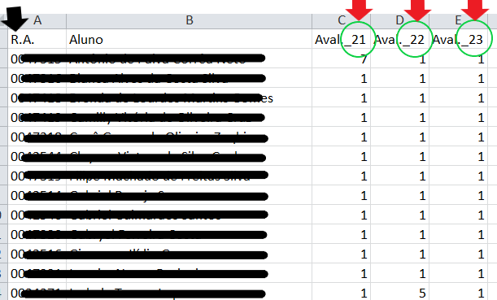

Digite suas notas no excel e salve com a extensão ".xlsx" ou ".xls".
Dentro da planilha você deverá seguir algumas regrinhas para a confecção do cabaçalho (primeira linha) do arquivo.
Para as avaliações crie colunas confome as setas Vermelhas e utilize o mesmo "Cód. Avaliação" (circulados de verde na imagem) criado para cada avaliação no Conecta.
Você também deve informar em uma coluna com o título RA (seta preta) todos os registros acadêmicos dos alunos.
Confira a imagem abaixo.
